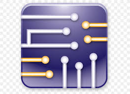
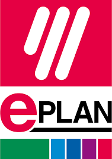
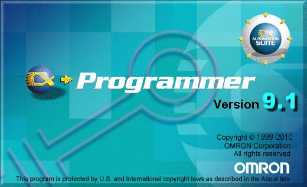

Service/Skill Offered
FluidSim Festo
Design Pneumatic and Electro-pneumatic circuits
Arduino
Microcontroller projects using Arduino

Python Programming
Develop web apps using Python & Streamlit

NI Multisim
Electronic circuit design implementing a logic gate

Eplan Electric P8
Draw electrical 2D and 3D CAD drawings.
TIA-Portal
Ability to create Siemens PLC ladder programming language

C Programming
Data collection with Arduino and Serial Communication
CX-Designer
Execute an Omron PLC Graphical User Interface

Android Studio
Java and AI-assisted mobile app development

AutoCAD
Draw an electrical schematic in 2D CAD.
PLX-DAQ
Log data from Arduino into an Excel CSV file via serial communication.

CX-Programmer
Execute an Omron PLC Ladder Programming Language